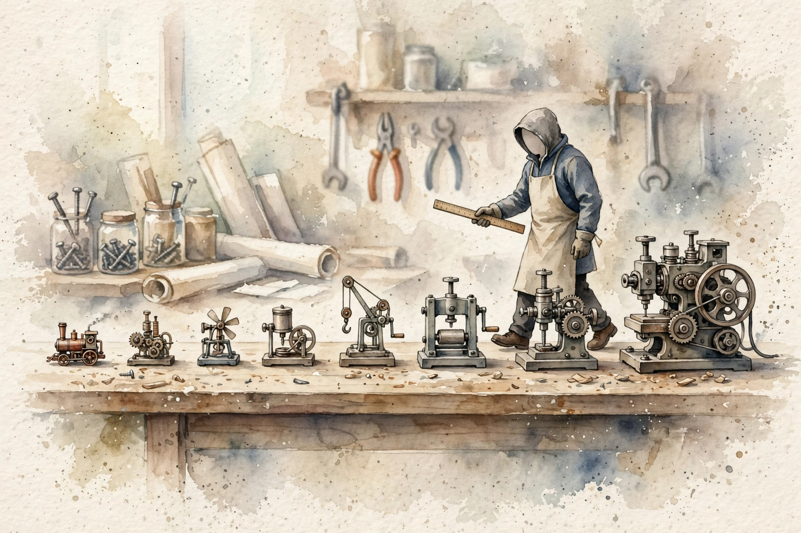
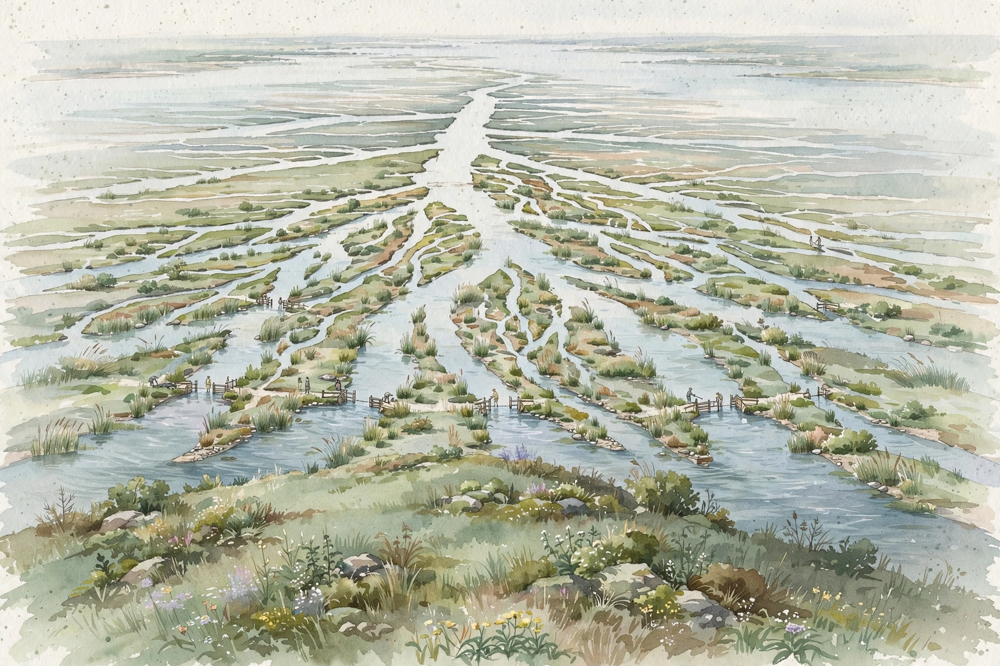
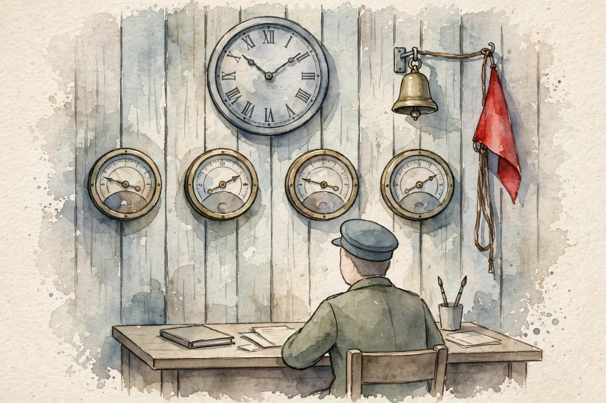

Companion · AWS AIP-C01 study guide · Unit 07
One method chapter and eight end-to-end designs teach how to build GenAI systems on Bedrock. This companion walks each design in source order, with the numbers the source uses.
SOURCE / INTERPRETATION: HOW TO READ THE TAGS
From the lesson SOURCE: the idea, and every number beside it, comes from the cited section of the source. The phrasing is the companion's.
Illustration INTERPRETATION: invented by the companion: an analogy, a toy with made-up values, or a what-if. Never source content.
companion INTERPRETATION: companion voice: the idea above the tag is from the source. The generalization below it is the companion's.

From the lessonIntro · What you get
The book holds one method chapter and eight end-to-end designs. Chapter 1 teaches the design procedure: clarify requirements, estimate, pick the cheapest rung that meets the limits. Chapters 2 to 8 give complete designs: sync and async invocation, RAG on Knowledge Bases, Bedrock Agents, the chatbot reference architecture, cost and latency and quality tradeoffs, eval loops, security, and the three decision ladders.
From the lessonIntro · What you get
Each design is one flow: the concept, the reason the design exists, the mechanics, concrete numbers, common misunderstandings, a diagram walk, and exam traps. The designs build on each other. Single model calls grow into RAG, RAG grows into agents, and the chatbot puts the parts together. A question bank closes the book: 24 scenario questions in three sets of eight, easy, medium, and hard multiple-response, each with full explanations. Numbers marked illustrative teach the math and are not official prices. The exam tests judgment about numbers, not recall of numbers.
From the lesson§1 · Requirements
Each system design question on the exam has the same shape. A scenario gives limits. The correct answer is the cheapest architecture that meets all limits. People who name a service at once fail. People who find the limits first choose well, because each limit removes options and one design remains.
From the lesson§1 · Requirements
Requirements come in two types. Functional requirements state what the system does: answer questions from documents, look up live order status, send answers to a chat UI, get human approval before a refund. Non-functional requirements state how well: latency, scale in requests per day and peak multiples, monthly cost, knowledge freshness, safety, and availability across a region outage.
From the lesson§1 · Estimation
Cost in GenAI is tokens, so the estimate converts early. Tokens per day equals requests per day times tokens per request. The monthly bill equals tokens per day times 30 days times the price per token. Clarify before you design: the scenario answers each question in one line, and the exam rewards the reader who finds each line.
From the lesson§2.1 · The API matrix
Four ways call a model, and each way has a latency, payload, and cost profile. The exam tests the decision, not the syntax. Converse and ConverseStream form the unified API: one request shape for Claude, Llama, Titan, Nova, and other models, with tool use, inline guardrails, prompt cache points, structured output, and inference parameters. Converse does text generation only and cannot do embeddings. InvokeModel and InvokeModelWithResponseStream take provider-specific bodies, and you need them for embeddings and for provider-only features. A wrong body gives a ValidationException. Batch inference is async and the cheapest path: prompts sit in S3, Bedrock runs them over hours, results land in S3, at about 50 percent below on-demand cost. Inference profiles move traffic between regions.
From the lesson§2.2 · The decision ladder
The decision ladder picks by latency, payload, and use case. A chat turn with 8 seconds of model time fits sync Converse behind API Gateway. A turn that can pass the API Gateway limit must stream or use the async queue pattern. An agent loop at 3 minutes per task cannot run sync behind API Gateway and goes to a queue. A nightly job over 20,000 tickets has no latency limit, and batch cuts its bill in half.
From the lesson§2.3 · Fallbacks
For hard failures, fall back once to a smaller model or answer from cache. That graceful drop is the resilience pattern the exam rewards. Circuit breakers wrap tool calls: after a run of failures, stop calls for a cool-down and save the token spend. Provisioned Throughput does not fix unstable output. Temperature at 0, steady prompts, and prompt versions fix unstable output.
From the lesson§3.1 · What a Knowledge Base is
A Knowledge Base is the managed RAG service: ingestion, chunk work, embed work, index work, and retrieval in one bundle. It exists because model knowledge is fixed in time. Without RAG you get three failures: invented facts, stale answers, and no citations. Fine-tuning is slower, costs more, cannot cite, and goes stale at each document change. Two pipelines run inside the base. Ingestion runs offline on a sync schedule: parse, chunk, embed, write vectors and text and metadata to the store. Retrieval runs online per question: embed the question, fetch the nearest chunks, re-score if a reranker is on, and pass the chunks to the model.
From the lesson§3.2 · Data sources and sync
Data sources feed the base: S3, a web crawler, Confluence, SharePoint, and Salesforce. Each source has its own chunk settings and its own sync schedule, and you set the chunk strategy at creation. A change to the strategy means a new data source. Documents with unlike chunk needs sit in unlike sources. A catalog with daily change gets a daily sync, and archive contracts get a one-time sync. Retrieval reads the vector index, not your bucket at query time. Stale answers after a document update mean the sync did not run.
From the lesson§3.3 · Chunking strategy comparison
Chunk work is the top retrieval control, because it decides what the retriever can see. A chunk that is too large dilutes the match. A chunk that is too small loses answer context. Fixed-size splits on token count with an overlap share. Hierarchical builds a tree: small child chunks match with precision, and the parent chunk enters as context. Semantic splits at topic shifts and costs more compute at ingestion. Tables split across chunks point to hierarchical chunk work and advanced parse, not to a larger generation model.
From the lesson§3.4 · Select an Embeddings Model
Two embed choices matter for the exam. Titan Text Embeddings v2 is the default and the low-cost pick, with dimensions at 1024, 512, or 256. Cohere Embed is the multilingual pick, with an input_type parameter that splits queries from documents and lifts match quality. Small dimensions cut storage and speed search, with a small accuracy cost. A model swap later means a full re-embed of each chunk, because vectors from unlike models live in unlike spaces.
Embedding dimensions and relative vector storage
Titan Text Embeddings v2 offers three dimension counts. Storage scales with the count.
| Dimensions | Relative storage | Source guidance |
|---|---|---|
| 1024 | 4 units | Use when quality matters most |
| 512 | 2 units | Middle step |
| 256 | 1 unit | Use for very large sets, storage and latency first |
Source: section 3.4, Select an Embeddings Model, in volume-system-design.html. The source states that 1024-dimension vectors use about four times the space of 256-dimension vectors.
From the lesson§3.5 · Vector store decision table
The vector store holds the vectors and runs nearest-neighbor search, and you pick it at base creation. The decision table rules out two traps. DynamoDB holds metadata and session state, not vectors. ElastiCache is a cache, not a durable vector home. One shared base with prompt-level tenant rules is also wrong: tenant isolation wants separate bases with IAM scope per tenant.
From the lesson§3.6 · Retrieval configuration
Retrieval has three controls: how many chunks (top-k), which subset (metadata filters), and how good (hybrid search plus rerank). Start top-k at 5 and raise it only when answers lack facts that the data holds. Metadata filters cut the set before rank, by source file, department, date, or tenant ID. Hybrid search pairs vector search for meaning with keyword search for exact terms such as product codes. A reranker re-scores the first pass for true relevance.
From the lesson§3.7 · Converse integration and Guardrails placement
The manual RAG loop uses the Retrieve API, not RetrieveAndGenerate. Retrieve returns chunks with source URIs and scores. Low scores across the board mean the defect is retrieval, and no later prompt trick fixes it. Your code builds the prompt: chunks in a context block, the question, and a ground rule that tells the model to answer from the context only. One Converse call then carries the model ID, messages, inference config, and the guardrail identifier with version. Guardrails check the input before the model and the output before the user, and the contextual ground check tests the answer against the chunks.
Illustration§3.7 · Step-through
Open the five steps of the manual RAG loop in order.
The vector store answers with chunks, source URIs, and relevance scores. Low scores for each chunk stop the line here: fix retrieval first.
Your code places the chunks in a clear context block, adds the question, and adds the ground rule to answer from the context only.
One call carries the model ID, the messages, the inference config, and the guardrail ID with version. Guardrails screen the input before the model sees it.
The model answers from the context you gave. The Retrieve path also leaves stream output open via ConverseStream.
Guardrails screen the answer before the user sees it. The contextual ground check tests the answer against the retrieved chunks.
From the lesson§4.1 · Agent anatomy and the orchestration loop
RAG answers questions from documents. Agents do work: call APIs, query databases, run multi-step tasks, hold session state. A Bedrock Agent is a managed reason loop. You give an instruction, a foundation model, and an IAM role that scopes reach. The loop runs invoke, reason, act, observe. Invoke takes an agentId, an agentAliasId for the prepared version, and a sessionId that ties turns together. Reason reads the instruction, the history, the tool schemas, and any base context. Act calls the action group executor, most often a Lambda. Observe feeds the tool result back into the loop.
From the lesson§4.2 · Action group and Lambda contract design
An action group is a named tool set with one executor. Define tools with an OpenAPI schema for an HTTP service, or with a function schema for small tools. Bedrock calls the Lambda with a structured event: the action group name, the function name, and the parameters the model extracted. Small functions with one purpose work best. Parameter names must match business names. Small JSON returns matter, because each tool token re-enters the model context and bills again. Validate inputs in the Lambda: the model can invent a parameter value, and your code is the last defense.
From the lesson§4.3 · Multi-step task decomposition
One message can hold three jobs. The traced example in the source takes a damaged-order message and splits it into an order lookup, a refund, and a label status check. The agent orders the sub-tasks by dependency, facts before actions, with no workflow code from you. The refund policy comes from the base, the order facts come from the tool, and the money step waits at a confirmation gate. The sessionId carries the order context into the next turn.
From the lesson§4.4 · Agent plus Knowledge Base plus Guardrails
The combined architecture joins three parts on one agent. The agent reasons and acts. The base grounds it in documents. Guardrails keep it safe at input and at final output. The agent IAM role is the security boundary: it names the bases the agent can query and the Lambdas it can invoke. Guardrails do not screen intermediate tool calls, so Lambda-side input checks stay in place. Trace support shows the reason path, and the prepare plus alias pair is the deployment discipline.
From the lesson§4.5 · Approval flows for sensitive actions
A human approves risky actions before the agent runs them: refunds over a limit, production changes, external mail. The pattern is Step Functions with a task token. The workflow pauses, tells a human by mail or ticket, and resumes only after approval. Step Functions can wait days and keeps timeouts, retries, and an action record.
From the lesson§4.6 · Tracing and debugging
Set enableTrace on invoke_agent and Bedrock returns the reason trace: model thoughts, base queries, tool calls with data, and tool results. The debug order is short. A new action group that the agent ignores means a missed prepare step or a stale alias. Wrong tool parameters mean a vague schema. A loop that never ends needs stop conditions and a task timeout. Old document answers mean a missed base sync. Access denied on a tool call means a Lambda policy or role gap.
From the lesson§4.7 · Multi-agent and framework options
Multi-agent work runs under a supervisor. Bedrock Agents has a built-in supervisor and collaborator system: the supervisor splits the task and hands parts to collaborator agents, each prepared and aliased. Strands Agents and AWS Agent Squad are the code-first paths the exam names. MCP is the standard for agent-to-tool talk, with servers on Lambda for small tools and on ECS for complex tools. AgentCore hosts agents from any framework, with Gateway, Memory, Identity, and Observability parts. Action groups link an agent to tools, never agents to agents.
From the lesson§5.1 · The reference architecture
The reference architecture is the standard serverless chatbot: API Gateway, Lambda, and Bedrock, with memory, stream output, cache layers, and auth. API Gateway ends HTTPS, throttles per client, and runs the authorizer before any Lambda code: Cognito for users, IAM for service-to-service calls. The router Lambda stays small: it loads the session from DynamoDB, builds the prompt from the system prompt plus history plus retrieved context, reads the model ID from AppConfig, and calls Bedrock. DynamoDB holds session memory with TTL expiry and the semantic cache. Sidecars watch the system: CloudWatch metrics, Logs Insights for prompt forensics, X-Ray traces, CloudTrail audit, and model invocation logs.
From the lesson§5.2 · Session memory options
Session memory is the conversation history that keeps a chat coherent. Some part must store it, load it per turn, and trim it at size. The window stacks four blocks: system prompt, chunks, history, and an output reserve. A stack that is too tall must shrink. The trim rule keeps the last N turns and stores a summary of older turns, made by a low-cost model call. Unbounded history is an unbounded bill.
From the lesson§5.3 · Send data to the client
Users feel latency as time to first token, not time to last token. Stream output cuts the perceived wait and leaves total generation time and quality alone. ConverseStream sends tokens as server-sent events. API Gateway with chunked transfer is the simple path, under its time limit. WebSockets or direct SSE carry long streams, and very long jobs use the async queue pattern with progress notes over the socket.
From the lesson§5.4 · Caching layers
Three cache layers do three jobs. Prompt cache serves repeated large static prefixes, such as system prompts and few-shot sets, via a cachePoint in the Converse request. Cached input tokens cost less. The TTL is short, about 5 minutes by default and up to one hour on supported models, so the layer pays only at high repeat rates. Semantic cache serves repeated similar questions: store question embeddings and answers, test similarity before the model call, and skip the call on a hit. Exact-request hash cache is the cheapest layer: same prompt and parameters, same stored response, zero model cost on a hit. Personal queries repeat too little for semantic cache, and the exam rejects that fit.
From the lesson§5.5 · Auth and model switching
Auth splits by caller. Cognito user pools serve end users, with groups for tiered access. IAM roles serve service-to-service calls, and the gateway authorizer runs before Lambda. IAM Identity Center permission sets give per-team access to models and bases in enterprise cases. Model switch with no redeploy takes three parts: AppConfig holds model IDs and feature flags, Lambda holds the route logic, and API Gateway gives the stable endpoint with throttles. CloudFormation is the distractor: a stack change is a deployment. EventBridge is the other distractor: it routes events and stores no config.

From the lesson§6.1 · The five cost controls
Five cost controls each move a distinct part of the bill: tokens in, tokens out, requests, and capacity. The exam pairs them as confusion sets. Prompt cache attacks repeat-input cost. Provisioned Throughput attacks latency and throttle risk. The scenario verb picks the control: a repeat long system prompt means cache, throttle at peak with a steady base means Provisioned Throughput, no service in the region means inference profiles, route by complexity means prompt routers, guaranteed throughput means Provisioned Throughput.
From the lesson§6.2 · Monthly cost math
The monthly cost formula is input tokens times input price plus output tokens times output price. The example runs a support copilot with 2,000,000 requests per day. Each request uses 1,500 input tokens, of which 1,200 are a static system prompt plus base context, and 300 output tokens. Prices are round example values: 3 dollars per million input tokens and 15 dollars per million output tokens for the main model, and 0.30 and 1.50 dollars for the small model. Output tokens drive the bill hard, because the output price per token runs far above the input price and output cannot cache.
Monthly token volume in the cost example
Billions of tokens per month. Input volume is five times the output volume, and the output price per token is five times the input price.
| Part | Tokens per month | Example price per million | Cost per month |
|---|---|---|---|
| Input | 90,000 million | $3 | $270,000 |
| Output | 18,000 million | $15 | $270,000 |
| Total | 108,000 million | · | $540,000 |
Source: section 6.2, Monthly cost math, in volume-system-design.html. Token counts follow the source formula. Dollar totals are arithmetic on the source example prices, which the source marks as round values for the math.
From the lesson§6.3 · Latency controls and quality controls
Latency controls and quality controls are distinct sets, and the exam marks cross-set answers wrong. Latency: stream output for perceived speed, smaller models for time per token, Provisioned Throughput to remove throttle spikes, cache hits for near-zero model time, parallel calls so the total is the max rather than the sum, and prompt compression for less prefill. Quality: retrieval quality first for RAG, model size, temperature and top-p and top-k for randomness, and prompt versions with eval gates. Temperature and its kin control randomness and quality. They control no cost line.
From the lesson§7.1 · The evaluation methods
Four ways score model outputs, each with a cost and a trust level: programmatic checks, metrics, LLM-as-a-judge, and human review. The trap set is plain. Programmatic checks cannot score style or brand voice. Human review as the only gate cannot scale to regression volume. The exam wants automated gates with human spot checks. A bigger model is no fairness fix: fairness needs metrics, A/B tests, and a judge on a run schedule.
From the lesson§7.2 · Metrics for each task type
Metrics map to task types, and the next section puts the judge on Bedrock. The section itself is a bridge: pick the metric that fits the task, then automate it at scale with a judge setup.
From the lesson§7.3 · LLM-as-a-judge setup on Bedrock
Bedrock model evaluation runs judge models against a dataset of prompts with optional reference answers: the golden dataset, held in S3. Build the golden set first, a few hundred representative prompts with known good answers. Split the judge from the contestant: a model never judges itself at high stakes, and the judge name goes on record so runs compare. Give the judge the rubric and the context: retrieved chunks for RAG faithfulness, the trace for agent tool use. Calibrate the judge against a human panel on one sample, and fix the rubric when the two disagree.
From the lesson§7.4 · Eval gates in CI/CD
Four gates guard a release. Gate 1 is cheap and fast: programmatic checks on each change catch crashes, format breaks, and toxicity spikes. Gate 2 compares judge scores for the new version and the old version on the same dataset, and a drop blocks the ship even if the new score still looks good. Gate 3 is canary traffic, a small live slice that finds what the golden set missed, with automatic rollback on a quality drop. Gate 4 is the human backstop on a small sample for brand voice and tone. After deploy, probes run on a schedule: hallucination checks, output diffs, reason-path traces. Quality is a time series, not a one-time check.
From the lesson§8 · Security hardening
A fast and cheap and well-measured system is not production-ready until it is safe. This chapter hardens the system in layers, and defense in depth is the rule: no single layer is the full answer. The request path runs WAF and auth at the perimeter, a prompt filter and model guardrails as the AI layers, an output filter as the last content check, and a VPC private network as the foundation. Audit logs run beside each layer, and encryption wraps the whole path.
From the lesson§8.1 · IAM least privilege
Each component gets the permissions it needs and no more, scoped to named resources. The router Lambda invokes named model ARNs, never a wildcard Bedrock grant. The agent role reads named bases and invokes named action-group Lambdas, and the action-group Lambda policy allows calls from the agent only. One role per component is the concrete shape. Multi-tenant systems use separate bases per tenant with IAM bounds. The safety train inside a model is never the full answer for a sensitive audience.
From the lesson§8.2 · KMS and VPC endpoints
KMS encrypts data at rest across S3 document buckets, DynamoDB session tables, EBS volumes, and invocation logs. Customer-managed keys serve compliance work, with control of rotation and access. TLS covers data in transit by default. VPC interface endpoints keep Bedrock traffic on the private backbone: control plane, runtime, agent, and agent-runtime endpoints. A Lambda in a private subnet then reaches Bedrock with no NAT gateway and no internet path.
From the lesson§8.3 · CloudTrail and audit
CloudTrail records who called which API, when, and from where: the audit trail. CloudWatch Logs holds application and decision content: what the prompt said and what the model answered. Trail answers compliance questions, and Logs answers debug questions. Invocation logs can hold PII, so KMS encryption or a log disable is the safe form. Lineage for a regulator combines Glue Data Catalog records, document metadata tags, source citations, and the trail. No single part is the full answer.
From the lesson§8.4 · Guardrails layering
The layer order runs a Comprehend pre-filter on input, Guardrails on the model call for input and output, a Lambda post-process step, and API Gateway response filters. Each layer catches a failure class the others miss. The control match is the exam core. A ban on a subject is a denied topic. Toxic content is a content filter. Exact strings are word filters. SSNs and names are sensitive-information filters with block or mask. Support by the source document is contextual ground. Fit with a written policy is Automated Reasoning.
From the lesson§8.5 · PII redaction flow
The PII flow runs on three planes. Macie works at rest and at scale: it scans S3 buckets and reports where PII sits, and it never sits in the request path. Comprehend works in flight: real-time entity detection on text in your pipeline, with a Lambda to redact before the model call. Guardrails work at the model boundary: block or mask per entity type on input and output. Lifecycle rules close the loop: expire transcripts on schedule and treat invocation logs as PII stores.

From the lesson§9.1 · Grounding ladder
The grounding ladder runs prompt engineering, RAG, agents, fine-tuning, in cost order. Each rung costs about ten times the rung before it in time and money, so the skill is an early stop. Documents that update each quarter and citation needs stop at RAG. Actions with verbs such as look up, book, update, or notify climb to agents. A tone-only change stays at rung one. Fine-tuning needs labeled data in S3, a customization job, and in most cases Provisioned Throughput to serve. A scenario with no data mention that asks for fine-tuning is a trap.
From the lesson§9.2 · Inference pricing ladder
The pricing ladder matches a pay form to a traffic form. On-demand handles change. Cache handles repetition. Batch handles delay. Provisioned Throughput handles predictability. Smaller models handle mixed difficulty. Provisioned Throughput is a latency and throughput tool that also costs money, and the exam shows it as a spike saver in error. Real traffic has two shapes, a flat base and spiky peaks, and the hybrid answer serves each shape with its own form.
From the lesson§9.3 · Safety control ladder
Higher safety rungs add to lower rungs and never replace them. A guardrail does not excuse a miss at the system prompt, and human review does not excuse absent guardrails. Sensitive audiences, such as children, healthcare, and finance, always need several rungs. Human review, the top rung, appears only at high risk: money movement, acts with no undo, vulnerable users.
From the lesson§9.4 · One scenario, all three ladders
One bank case runs all three ladders at once. The copilot answers from 40,000 policy documents with monthly updates, handles balance questions and card replacements via live APIs, blocks financial advice, masks account numbers, and needs human approval for fee reversals over 500 dollars. Ground: RAG for the documents, an agent for the actions, no fine-tune. Price: on-demand as the base for spiky support traffic, prompt cache for the repeat policy context, batch for the nightly fee reports, a cascade for simple FAQs. Safety: ground rules, guardrails with a denied topic and a PII mask and contextual ground, IAM scope to read-only banking APIs, continuous eval, and Step Functions approval past the 500-dollar line.
From the lesson§10 · Question bank
The bank holds 24 scenario questions in the most-correct style: 8 easy, 8 medium, and 8 hard multiple-response. Each answer explains the correct pick and kills each distractor with a reason. The bank sections run per chapter in the source order: chapter 3 RAG, chapter 4 agents, chapter 2 invocation, chapter 5 chatbot, chapter 6 cost, chapter 7 evaluation, chapter 8 security, chapter 9 ladders.
From the lesson§10 · Bank, chapter drills
The drills repeat the volume rules under pressure. A quarterly manual update with citations lands on a knowledge base with a sync schedule. A clause split across chunk bounds lands on hierarchical chunk work. Tenant isolation lands on one base per brand with IAM scope. A tool that stays invisible after a config change lands on the missed prepare step. A two-day human approval lands on Step Functions with a task token. A provisioned model that still throttles lands on the base model ID in the code. Session state lands on DynamoDB with TTL. A model switch lands on AppConfig plus Lambda plus API Gateway. A nightly bulk job lands on batch inference at about half the on-demand cost.
Every lesson on this page, in order. Tap one to return to its chapter.